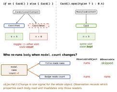

swiftui · folio
In one line: SwiftUI keeps state and view lifetime per identity, and re-runs body only for
views whose dependencies changed. Fast SwiftUI = stable identity (state survives, diff is
cheap) + narrow dependencies (few bodies run) + cheap bodies (each run is fast).
Download PDF Print view LaTeX source

How it works
- Structural identity — a view’s type + position in the
bodytree.if/elsebecomes_ConditionalContent: the two branches are different slots, so switching branch = destroy one view, create the other (state gone,onAppearagain, transition plays). - Explicit identity —
ForEachids (Identifiable/id: \.x) and.id(_:). A new.idvalue = a brand-new view: legit to reset a form or scroll view, costly if it changes every update. AnyViewerases the type, so SwiftUI cannot see the structure: when the wrapped type changes the whole subtree is replaced, and diffing is slower. Prefer@ViewBuilder,some View, or a modifier on one view (.opacity,.disabled) over a branch.- What invalidates
body: a@State/@Bindingit reads; anObservableObject’sobjectWillChange(any@Published— whole object); an@Observable(17) property it read during the lastbody(per property); an@Environmentvalue it reads; or new, non-equal inputs from the parent. - Skipping: SwiftUI compares a child’s inputs before calling its
body; closures and non-equatable fields defeat that.Equatableview +.equatable()lets your==decide — worth it only if==is cheap and complete. - Cheap body: no
DateFormatter(), sorting, filtering, image decode or I/O insidebodyorinit— precompute in the model, cache in astatic let, or load in.task(id:)(cancelled + restarted whenidchanges). - Narrow state: push state into the smallest subview that reads it; pass plain values, not the whole model, to leaf views.
List(UICollectionView-backed since 16) reuses cells(unverified);LazyVStackin aScrollViewbuilds rows on demand, no reuse(unverified);VStackbuilds all rows up front.- Pagination: load more when the last (or n-th from last) row appears, guarded by
isLoading+ a page cursor —onAppearre-fires on scroll-back. - Measure:
let _ = Self._printChanges()inbody(DEBUG, prints@self,@identityor the property that changed). Instruments’ SwiftUI template: View Body counts (pre-Xcode 26); Xcode 26’s SwiftUI instrument adds long-update lanes and a Cause & Effect graph. Pair with Time Profiler + Hangs.
Example — a lean, paged feed
@MainActor @Observable final class Feed {
var items: [Post] = []; var isLoading = false
func loadMore() async {
guard !isLoading else { return }; isLoading = true
defer { isLoading = false }
items += await api.page(after: items.last?.id) } }
struct FeedView: View { let feed: Feed
var body: some View {
List(feed.items) { post in // Identifiable, stable id
Row(title: post.title) // a value: Row redraws only
.task { // when its title changes
if post.id == feed.items.last?.id {
await feed.loadMore() } }
} } }Identity & dependencies

Traps
ForEach(items, id: \.self)on mutable values, array indices, orUUID()made inbody— every row looks new: lost row state, wrong animations, duplicate-id glitches. Use a stable, entity-owned id.- “
@Observablefixes everything” — a view that reads a high-churn property, or a whole model passed down, still redraws a lot. Computed properties count as reads of what they touch. .id(UUID())or an.idtied to often-changing data silently rebuilds the subtree (and a wrappedUIView) on every update.- An incomplete
==on anEquatableview ⇒ stale UI; an expensive one is slower than just re-rendering. VStackof 10 000 rows inside aScrollView— eager; useListorLazyVStack. AGeometryReaderper row adds layout passes.